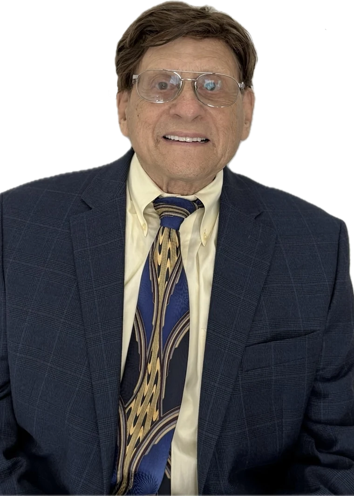
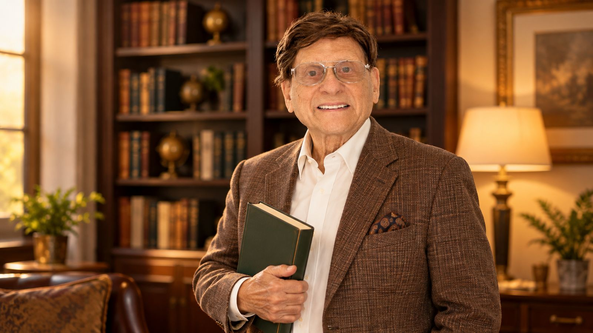
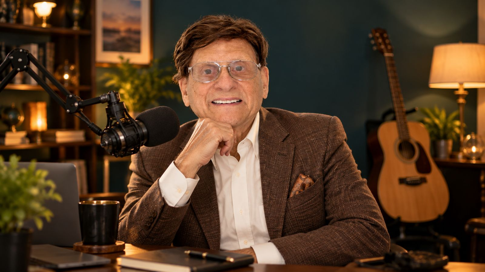
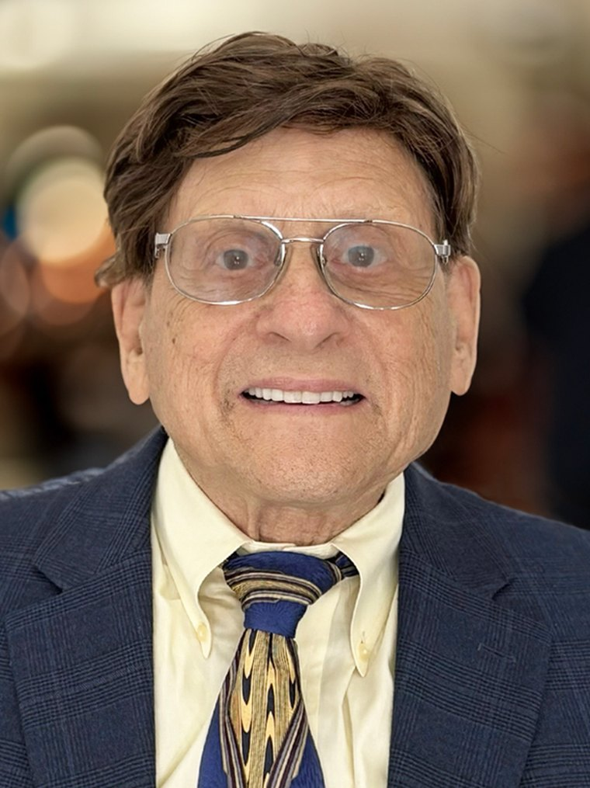

Bill Sefekar is a writer, teacher and musician. He has published two books, produced 170 television programmes, and spent seventeen years in classrooms across Florida. The through line is the same in all of it: find the story somebody else is carrying, and get it told properly.
Books › Television › Classroom › Music
The books The music
Both published books are about somebody else. That is not an accident.

Written with Cantor William Hauben, a Holocaust survivor, the book carries the stories of ten nations whose people acted to save Jewish lives. It is Hauben's testimony, and Sefekar's work was to help him set it down. The book led to a reception at the Embassy of Israel in Washington.
His father, Joseph Sefekar, was born in lower Manhattan, served with the First Army in the Second World War and was decorated with the Bronze Star. He spent thirty eight years in federal government, including as administrator on the Hirshhorn Museum and Sculpture Garden, and later as finance officer for Ruth Eckerd Hall in Clearwater. He was married to Thelma for more than sixty seven years.
He worked on it with his father from 1997 to 2008, going through Joseph's own writing and keeping the memorabilia of a life that ran for almost a century.
In progress. A reflection on the people and the lessons that shaped him, and the first of the three books that is about his own life rather than someone else's.
Sefekar produced and directed B'nai B'rith Presents Jewish Life in Tampa Bay for public access television from 1994 to 2007. Public access is unglamorous work with no budget and no audience guarantee. Running it for thirteen years is the part worth noticing.
More than sixty broadcasts and over a hundred recordings across his two channels, The Bill Sefekar Experience and Mr. Bill's Adventures, alongside live performances of what he calls Mood Message Music at venues around Tampa Bay.
TBCN Unplugged, with John Casimiro. Tampa Bay Community Network, 14 May 2026.

Light: Courage and Hope exists because Cantor William Hauben lived it and wanted it set down while he still could.
Hauben survived four camps. He died aged 95. The book is his account, and Sefekar's work on it was to help him get it onto the page in his own words rather than somebody else's.
It carries the stories of ten nations whose people acted to save Jewish lives during the Holocaust, at a time when standing aside was the safer choice.
The book led to a reception at the Embassy of Israel in Washington, attended by ambassadors and dignitaries.
Every year there are fewer people left who can say what happened because they were there. A book written with one of them is a record that outlasts him.
Wild Rover Brewing Company, Tampa
An evening of the Mood Message Music he has been playing around Tampa Bay for years. Songs, and the stories that go with them.
Sefekar teaches with Hillsborough County Public Schools, and taught previously with Pinellas County Schools. Across seventeen years he has worked at every grade level and across subject areas, and he still substitute teaches and presents in classrooms.
He carries his guitar and his books into class with him, and uses both to reach students that a textbook on its own would not.
He also volunteers at East Lake High School.

You can do it.
What he says to students, and to audiences
“You think outside the box. I live outside the box.”
Bill Sefekar
On It Worked 4 Me, the book he is still writing: he says it “happened to be blessed by none other than General Colin Powell of blessed memory.”
Bill’s own account, in his words.
Most of what follows is voluntary, and most of it has run for years rather than months.
Board member, serving as Media and Outreach Director and in fundraising operations.
Helped establish the library in Palm Harbor, Florida.
Has spoken at the Tampa Bay Jewish Book Fair and at a B'nai B'rith Mini Book Fair, and presents regularly at Friends of the Library and Meet the Author events.
The books, the broadcasts, the classrooms and the library are all within an hour of each other. It is a body of work built in one place, for the people who live in it.
For author events, classroom visits, speaking engagements or anything to do with the books, get in touch. His writing on his father and the family archive continues at Joe's Lifelong Legacy.